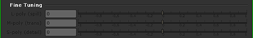

要清除溢出:
| 1。 | 选择 微调滑块 在 操作 下拉菜单。这激活了 罚款 调谐 滑块。 |

| 2. | 在查看器中，放大一个有蓝色边缘或溢出的区域。 |
| 3. | 使用光标，对其中有一些溢出的颜色区域进行采样。当您松开笔或鼠标按钮时，Primatte 会在当前色样中注册选定的颜色 (或平均多个像素)。 |
| 4. | 对于大多数图像, L-poly (溢出) 滑块是消除任何剩余蓝色溢出所需的全部。向右移动滑块，从采样像素中删除溢出颜色。向左移动，将选定像素向原始前景图像中的颜色移动。 |
当使用 L-poly (溢出) 滑块，溢出颜色替换根据的设置被替换 溢出过程替换 控制。有关这些工具的更多信息，请参见本章的部分 更换泄漏 .
提示: 对蓝色泄漏区域进行几个小的调整比单一的重大调整要好。
| 5. | 您可以以相同的方式使用另外两个滑块来进行不同的关键点调整。的 S-poly (详细信息) 滑块控制最接近背景颜色的哑光柔软度。例如，你能找回丢失的烟雾中前景的选择 微调滑块 动作，采样图像中烟雾刚刚开始消失的区域，并移动 S-poly (详细信息) 向左滑动。的 M-poly (反式) 滑块控制最接近前景色的颜色的哑光柔软度。例如，如果前景中有厚厚的不透明烟雾，可以通过移动 透明度 在选择像素后向右滑动 微调滑块 模式。 |
提示: 如果前景图像在微调过程中颜色发生了显著变化，您可以通过选择非彩色前景图像的区域并移动 L-poly (溢出) 滑块稍微向左倾斜。这可能会引入溢出到该颜色区域。再次，使用 微调滑块 选择抑制泄漏，但这次进行较小的调整。
|
|